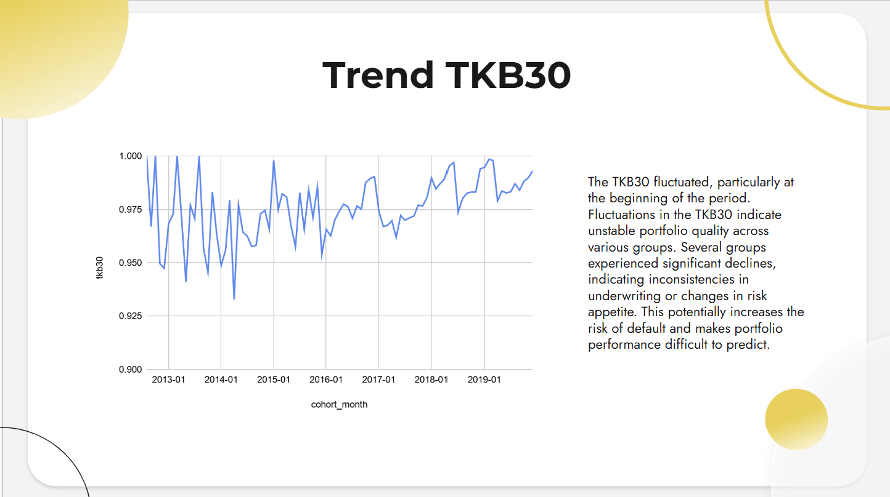
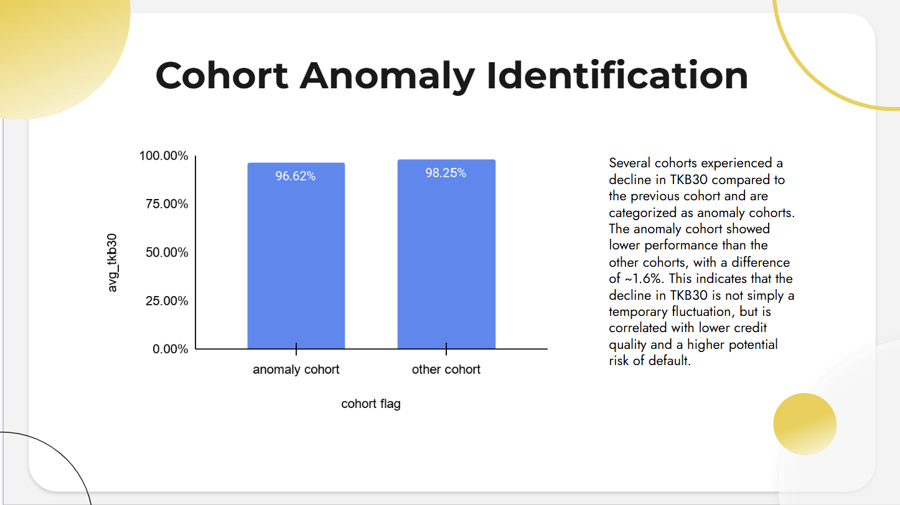
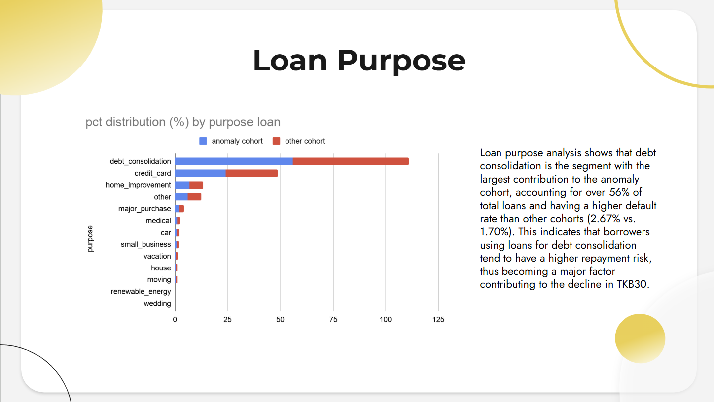
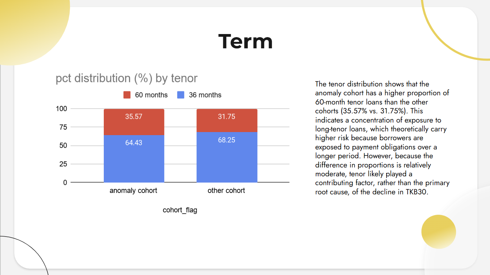

Disclaimer: Loan Portfolio Health and Risk Analysis for Fintech project is a part of RevoU Data Insight Project, a 4-week case study designed to analyze customized datasets and address business challenges. Supervised by RevoU, this project hones analytical skills, strengthens problem-solving abilities, and guides students in delivering actionable insight.
RevoFin is a fintech lending company with a growing loan portfolio. As the number of loans increases, credit risk also increases, necessitating analysis to understand portfolio health and risk distribution. This project aims to evaluate loan portfolio performance and identify high-risk customer cohorts and segments to support data-driven decision-making in the lending process.